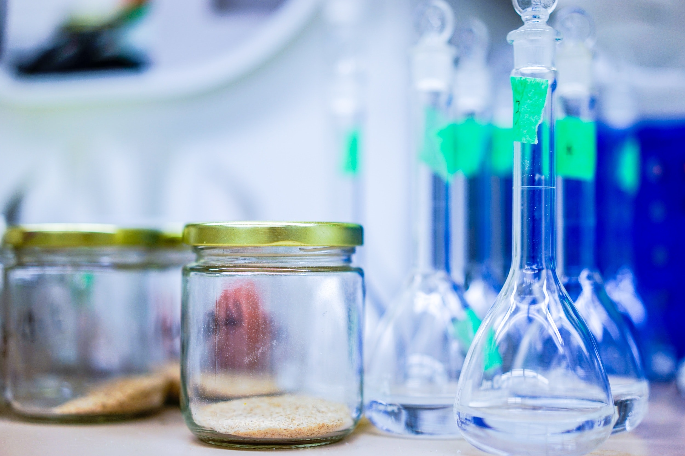

made by Onyela Isioma
SCIENCE

They are 3 main branch of science and they are;
1. Physics

2. Chemisty

3. Biology

They will be explained below
1.phyics
Physics is the brannch of science that deals with matter and the many it operates in our enivorment and its effect on its environment.
Its show how matter moves and aslo about different principles that governs our every day life.
Examples of the daily application of physics are
- Throwing a stone with the application of a force
- Lifting a heavy objecting
- Movement of a car in a smooth road
- Recoil of a gun
- Use of electrical devices such as; fans, mobile devices, televisions and speakers which may also require the use of magnets in thier production
- Construction of roads and buildings with the use of mechanical devices
and many others
The following are some important topics in physics
- Measurement
- Scalers
- Vectors
- Motion
- Work
- Energy
- Power
- Equilibrium of forces
- Friction
- Simple machiences
- Elasticity
- Hydrostatics
- Heat
- Temperature
- Waves
- Electrostatics
- Current electricity
- Magnetism
- Atomic physics
Some other minor branches of phyics are;
-
Kinetic energy
- Potential energy
- Conduction
- Radiation
- Convection
- Reflection of waves
- Refraction of waves
- Diffraction of waves
- Interference of waves
- Capacitance
- Resitance
- Conductance
- Inductance
- Potential difference
- Electromotive force
- Electric circuit
- Magnets
- Wave particle paradox
And many others
Physics was created several years ago by different scientists namely;
- Micheal faraday(father of modern physdics)
- Tesla
- Charles barbage,etc.
Some formulas to note on physics are
- V = S/t
- S = Ut + (a*t^2)/2
- V^2 = U^2 + 2as
- U1M1 + U2M2 = V1M1 + V2M2
- F = MA
- Impulse = Force*Time
- Momentum = Mass* Velocity
- F= (MV-MU)/t
- FT= MV-MU
- Angular Velocity= (Angular Displacement)/Time
- Centipetal acceleration = (v^2)/r = (w^2)*r = vw
- Centipetal force = (Mass*centipetal force) = (m * v^2)/r = m*w^2*r = mvw
- F= 1/T
- w = 2πf
- v = wr
- T= (2π)*(l/g)^1/2
- co efficent of static friction = tanθ
- force= (co efficent of friction * weight)
2.chemistry
chemistry is the study of the chemical composition of elements. its shows the basic build up of elements which consists of;
- proton
- newtron
- electron
matter consists mainly of
- compound
- elements
- mixtures
chemistry consists of the following topics
-
Composition of matter
- Moles
- Atomic structure
- Periodicity
- Chemical elements
- Chemical symbols
- Structure of matter
- chemical bonding
- kinetic theory of matter
- energetics
- electrochemistry
- Acid, Base and Salt
- Stochiochemistry
- Organic Chemisrty
- Inorganic Chemistry
- Metals,non Meteal and Metalloids
- Organic Chemistry
- Nuclear Chemistry
Other topics in chemistry are
- Groups in the periodic table
- Periods in the periodic table
- Calculations involving ; mole ratio, organic chemistry,water of crystallization
- Industrial chemistry
- Hydrocarbons
- Gaint molecules
And so many others
Some of the various scientists that contributed in the discovery of the parts of chemistry we know today are;
- J.J.Thompson
- Earnest rutherford
- James chadwich
- Marie quire
- Presitly
- Laviouser
- Urey
- Henry berquerel
- Sir john dalton
And many other scientists that may not have been listed above
Some things to note on chemistry are;
The first 20 elements of the peeriodic table are:
- Hydrogen
- Helium
- Lithium
- Berilium
- Boron
- Carbon
- Nitrogen
- Oxyegen
- Flourine
- Neon
- Sodium
- Magnesium
- Aluminium
- Silicon
- Phosphorus
- Sulphur
- Chlorine
- Argon
- Potassium
- Cacium
some important things to learn in chemistry are;
Solid → liquid (melting)
liquid → solid (freezing)
liquid → vapour (boiling)
vapour ← liquid (condensation)
solid ⇆ vapour (sublimation)
they are 2 whanges that occurs in matter
- physical change
- chemical change
- chemical change is a change of state of matter that cannot be reversed and also changes the structure of the matter. exampl,es are burning a piece of paper(combustion), rusting of iron mixing cacium oxide in water, etc.
- physical change is a change in matter that can be reversed easilly and does not change the structure of the matter. examples are; boiling, freezing icecream, magnetization of metalsbreaking a glass, etc.
3.biology
biology deals with the study of living things.
it deals with mainly living things, how they are formed and different processes they go throughb before they die
The main processes of biology are
MR NIGER D
Which means
- Movement
- Respiration
- Nutrition
- Immunity
- Growth
- Excretion
- Reproduction
- Death
biology deals with mainly living things
in biology all living things are categorised under the following
see more explanations in google